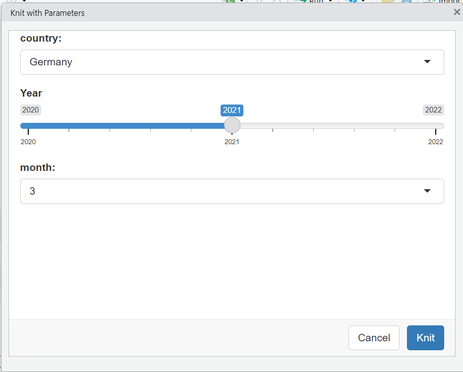
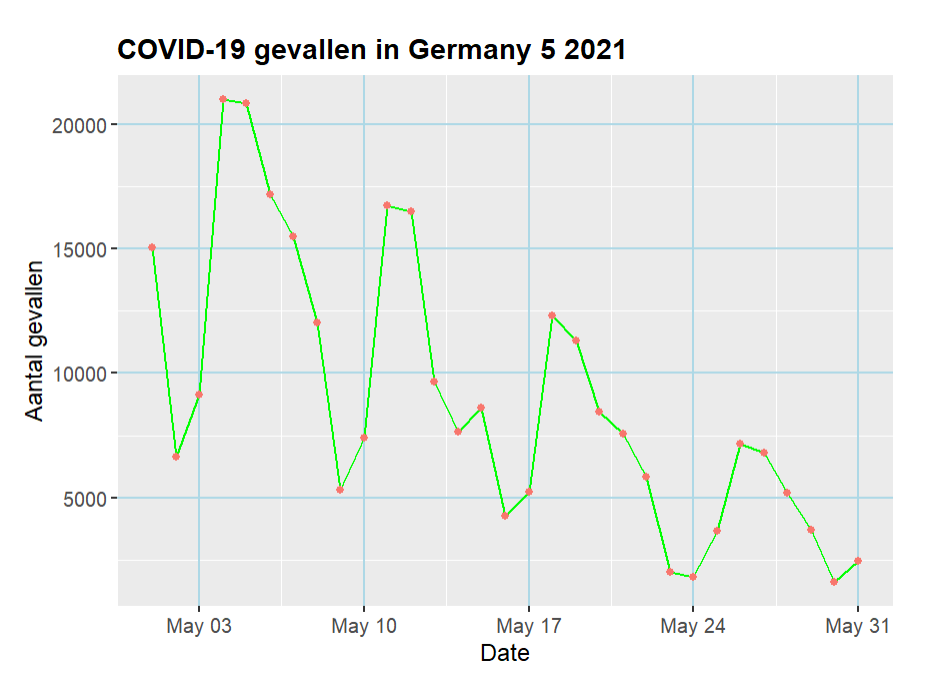

11 Covid-19 report parametrizing in RMarkdown
11.1 Introductie
Dit rapport biedt een analyse van COVID-19-gevallen en sterfgevallen voor een bepaald land en jaar. Het rapport is geparametriseerd om flexibiliteit mogelijk te maken bij het selecteren van het land, het jaar en de maanden waarin u geïnteresseerd bent. De data is gedownload van European Center for Disease Control (ECDC).
De originele RMarkdown bestand waar de parameters ingesteld is bewaard in mijn portofolio repository link naar repo
11.2 load de data
Eerst laden de benodigde libraries en de dataset.
# libraries
library(tidyverse)
library(lubridate)
library(ggplot2)
library(readr)
library(dplyr)
library(knitr)
# Load the data
covid_data <- read.csv("doc/parameters_bestanden/data.csv")
colnames(covid_data)
head(covid_data)
# Convert dateRep to Date type
covid_data$dateRep <- dmy(covid_data$dateRep)
# Print the first few rows of the dataset
head(covid_data)11.3 Data filteren en gegevens voorbereiden
Filter de gegevens op basis van de parameters voor het opgegeven land, jaar en periode.
# Filter data based on parameters
covid_filtered <- covid_data %>%
filter(countriesAndTerritories == params$country & year == params$year & month %in% params$months)
head(covid_filtered)
## *Figure 1: COVID-19 Cases filter*11.4 Plotten maken voor COVID-19-gevallen en sterfgevallen.
# Plot COVID-19 cases
cases_plot <- ggplot(covid_filtered, aes(x = dateRep, y = cases)) +
geom_line(color = "green") +
geom_point(aes(color = "darkblue")) +
labs(title = paste("COVID-19 gevallen in" , params$country , params$months , params$year , sep = " "),
x = "Date",
y = "Aantal gevallen") +
theme(
plot.title = element_text(size = 14, face = "bold"),
axis.title = element_text(size = 12),
axis.text = element_text(size = 10),
panel.grid.major = element_line(color = "lightblue", size = 0.5)
)
cases_plot
## *Figure 1: COVID-19 Cases in Germany in maand mei 2021 *# Plot for COVID-19 related deaths
sterfgevallen <- ggplot(covid_filtered, aes(x = dateRep, y = deaths)) +
geom_line(color = "darkblue") +
geom_point(color = "red") +
labs(title = paste("COVID-19 sterfgevallen in" , params$country , params$months , params$year, sep = " "),
x = "Date",
y = "Aantal sterfgevallen") +
theme_minimal()
sterfgevallen
## *Figure 1: COVID-19 sterfgevallen in Germany in maand mei 2021*